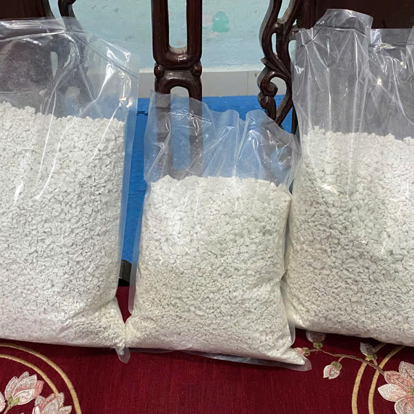
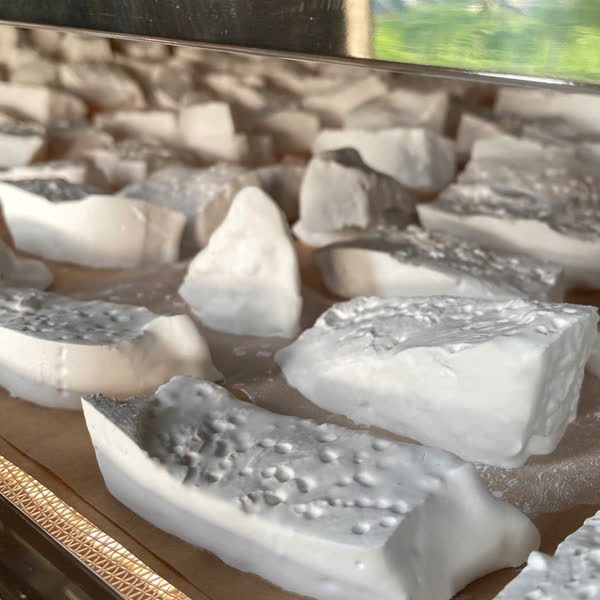

Kudzu Root Starch
Ingredients: 100% kudzu root starch. Store in a cool, dry place away from direct sunlight.
- 0.5 kg bagRetail, delivery within Vietnam80,000 VND
- 1 kg bagRetail, delivery within Vietnam155,000 VND
- 5 kg / 10 kgWholesale & export — price depends on volume and destinationAsk us
- We confirm your order, shipping cost and payment method before shipping
- Always in stock — packed and shipped soon after you order
- Wholesale and export partners: samples available on request
One bag, many familiar dishes
Cooling drinks
A traditional Vietnamese summer drink, stirred into water.
Desserts
Sweet soups (chè), jellies and puddings — smooth and glossy when cooked.
Cooking & baking
A clean thickener for soups and sauces; soft, chewy cakes.
With milk & drinks
Mix with milk, lime juice or honey to taste.
Kudzu root starch is a food product, not a medicine.
Six steps, done properly
Every photo was taken in the cooperative's own fields and workshop in Vu Lang commune.

Grown among limestone hills
Vines climb the trellis while the roots grow underground.

Whole roots dug up
Dug out whole at harvest and brought to the workshop the same day.

Washed and ground
Washed clean, then ground and pressed for the starch milk.

Filtered & settled, many times
Stirred, settled, rinsed and filtered until pure and white.

Kiln-dried
A preset temperature dries it evenly, whatever the weather.

Bagged straight from the kiln
Packed as soon as it is dry, keeping its natural white color.
Let's work together on larger orders
A dry, shelf-stable powder that packs and ships well over long distances, including by sea — the product we offer to wholesale and export partners.
A short introduction, from our fields to your inbox
See it for yourself, field to workshop
The full journey — harvest, grinding, drying
How big is the root, really?
Inside the drying kiln
A morning in the fields, among limestone hills
Frequently asked questions
How long does the kudzu root starch keep?
It's fully dried, so it keeps well — store in a cool, dry place away from moisture. Available year-round; we always have fresh stock ready to ship.
What certifications do you have?
Documentation for Kudzu Root Starch will be published here once the cooperative completes its paperwork — we only list what we can show on paper. No additives and no bleaching agents is our commitment.
Do you ship outside Vietnam?
Yes, for wholesale/export. It's a dry, shelf-stable product that ships well over long distances, including by sea. Contact us to discuss quantity, packaging and shipping method.
What if my order arrives damaged or wrong?
As this is a food product, we don't accept returns on opened or used items. We'll replace the item or refund if it arrives damaged, the wrong item/quantity was sent, or there's a production defect — film an unboxing video and message us within 24 hours of delivery.
Retail, wholesale or export
Message us and the cooperative will reply with prices, packaging options and shipping.
Looking for Canh mandarins? See the Canh mandarin page →